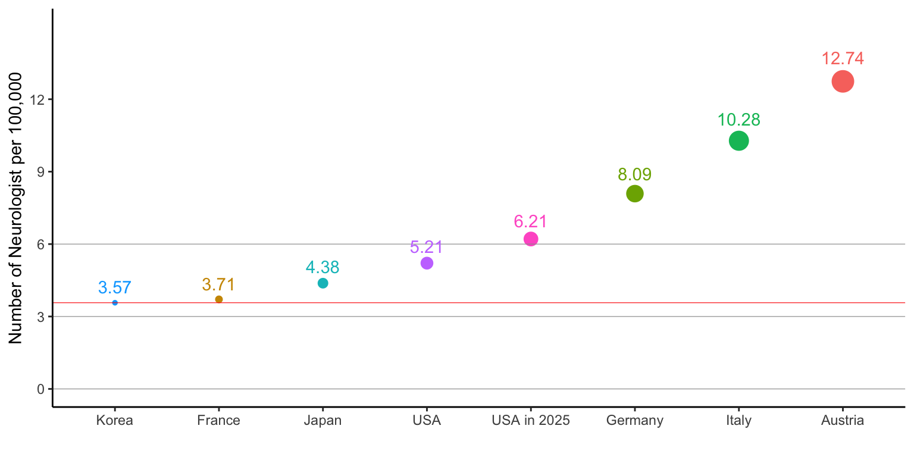

Chapter 1 신경과 전문의 수급현황
1.1 인구 10만명당 신경과 전문의 수

• 인구 10만명당 신경과 전문의의 숫자는 한국이 3.57명 (2018년기준)으로 네덜란드, 일본, 헝가리, 스위스, 칠레 등에 비해 적음.
• 통계청 자료에 의한 2018년 인구는 51,014,947명으로, 인구 10만명당 신경과 전문의 수가 네덜란드 수준인 6명이 되려면 3060명이 필요함 (2018년 전문의 수가1845명이므로 부족분은 1215명).
• 미국의 경우 2012년 기준 인구 10만명당 신경과 전문의는 5.21명이며 2025년에는 6.21명이 필요할 것으로 예상되고 있음.